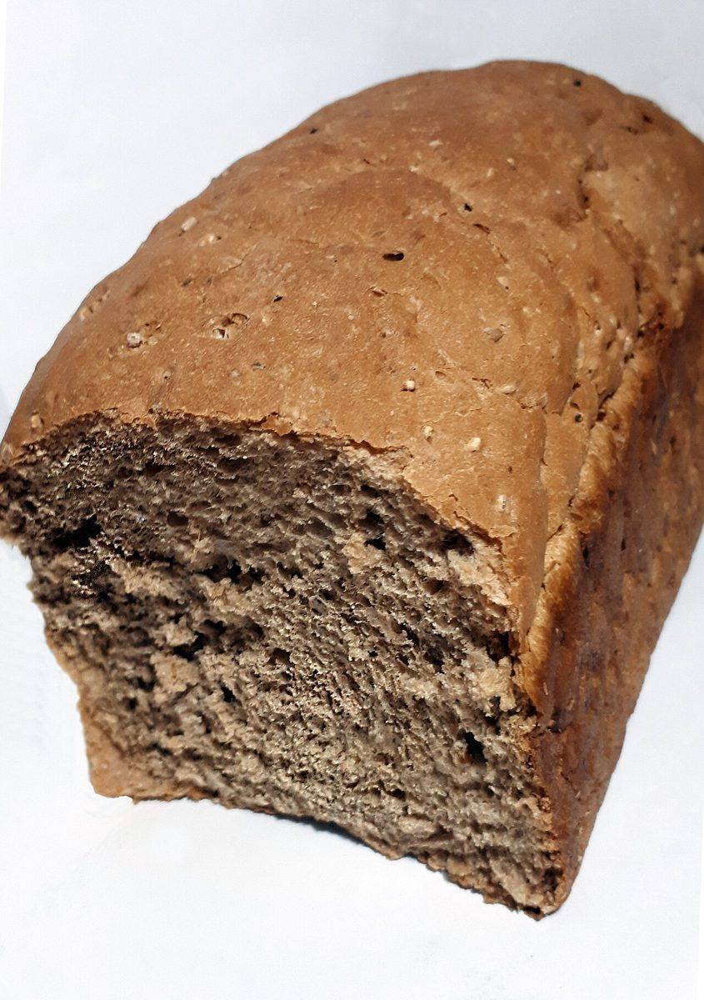

ふたつめの「1」
お店のこと
お店について確認できているのは、店名「手づくりパンの店 maru」、所在地、Instagramのアカウントです。紹介文や商品の説明は、お店の方からお聞きした内容で差し替えるため、現在は準備中です。
| 店名 | 手づくりパンの店 maru |
|---|---|
| 所在地 | 〒569-0855 大阪府高槻市牧田町7-55-102 |
| 電話 | 072-648-3663 |
| @maru.pan.takatsuki | |
| 営業時間 | 準備中 |
| 定休日 | 準備中 |
| 駐車場 | 準備中 |
| ご予約 | 準備中 |


このサイトの約束事3.1415 のしくみ
店名の「maru」から、制作側が「丸」を連想して決めた飾りです。お店の理念や名前の由来とは関係がありません。
- 3ホーム
- 1メニュー
- 4口コミ
- 1お店のこと
- 5アクセス